GROW Lab & nVision
A Research Mindset in Every Clinic
Questions raised in the clinic are answered in the lab, and what the lab discovers comes back to the clinic. From biomarkers and patient-derived cells to AI-driven treatment planning and X-PLAIN, our centre for the unexplained.
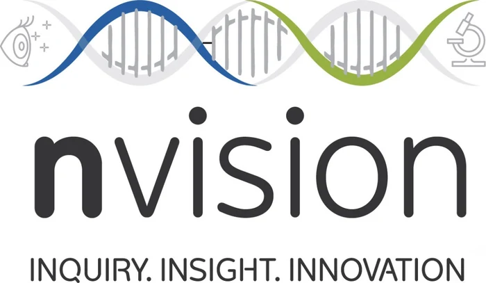
GROW Lab & nVision
Pillar 03: A Research Mindset in Every Clinic
Every patient is seen with a research mindset. Our clinics are closely linked to the GROW Lab (Genes Repair Regeneration in Ophthalmology Workstation) and nVision. Questions raised in the clinic are answered in the lab, and what the lab discovers comes back to the clinic.
Molecular insights
Genetic and biomarker science brought to everyday care.
Patient-derived cells
Drug testing and translational pharmacobiology.
AI & data science
Finding patterns the eye cannot see.
Evidence before routine
Every new technology evaluated, measured and published first.
“We look at everything with a research mindset.”
Translational Eye Care
Clinicians by Training.
Scientists by Mindset.
From your clinic visit to our own research lab, and back to you with answers.
We are translational clinicians who also work as translational scientists. Our clinics are connected to our own research lab, among the most advanced in the world. There we explain the unexplained, study biomarkers, and develop unique tests that diagnose disease better, so that your care can be personalised and precisely targeted.
- Clinic visit
- Research lab
- Answers for you
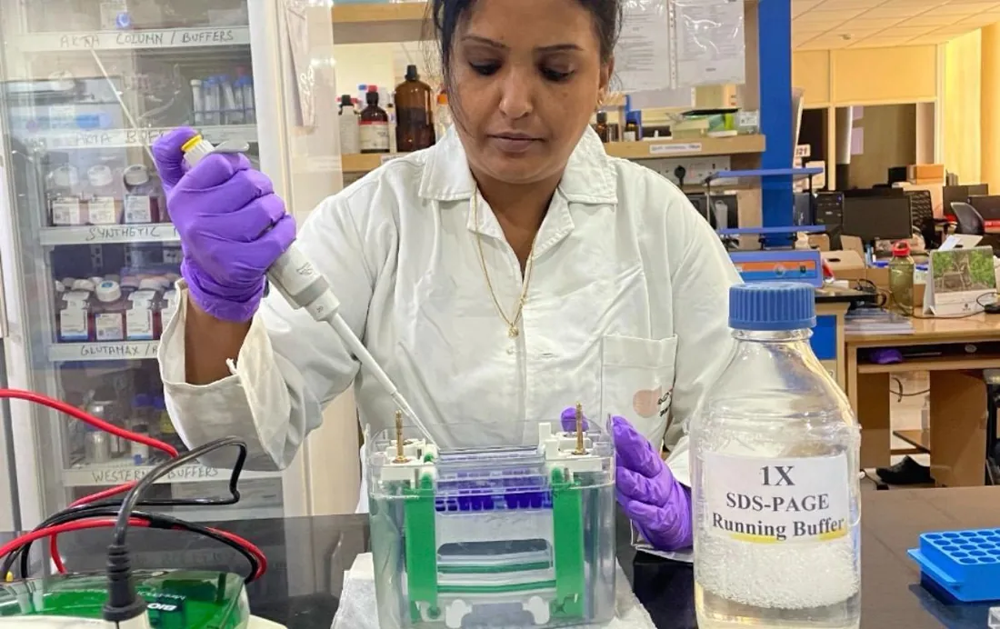
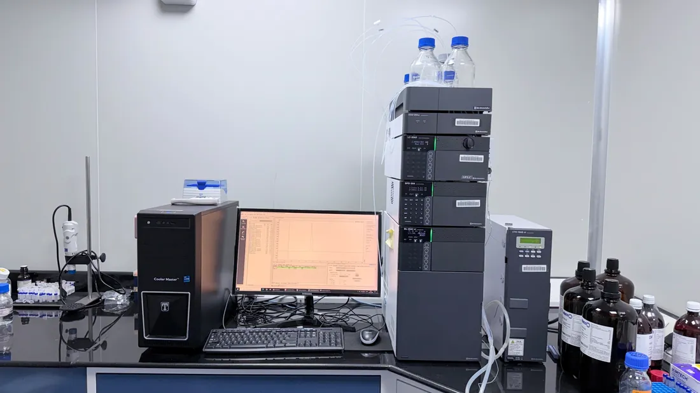
- 01
Explain the unexplained
Answers for symptoms and diseases that have none yet.
- 02
Read the biomarkers
The molecular signals in tears, cells and tissues.
- 03
Unique diagnostic tests
Tests developed in our lab to diagnose disease better.
- 04
Personalised, targeted care
Treatment matched to your biology, not an average.
Our Research Ecosystem
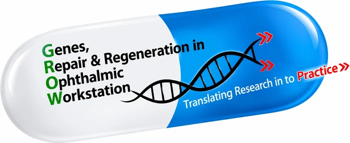
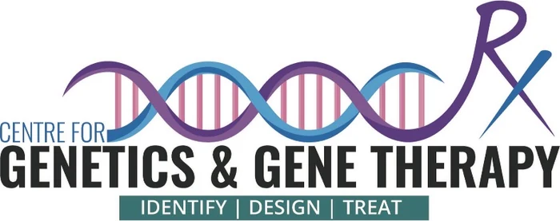
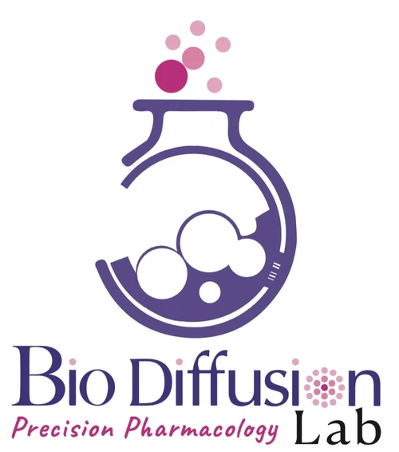
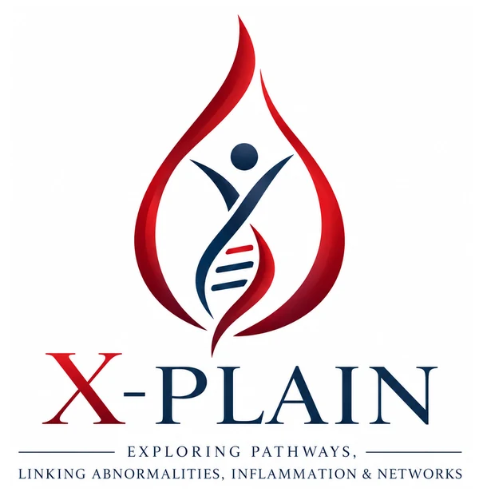
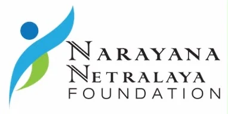
Inside our Research Lab
Where questions from the clinic find their answers
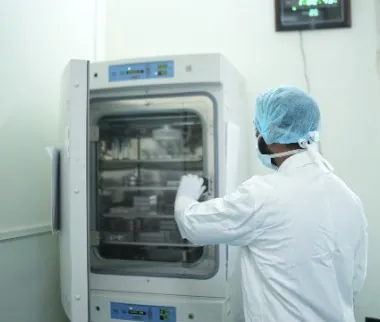
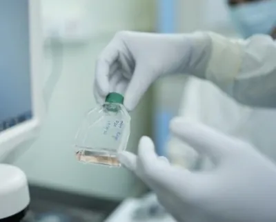
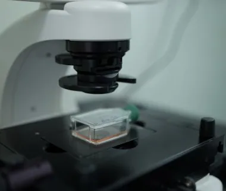
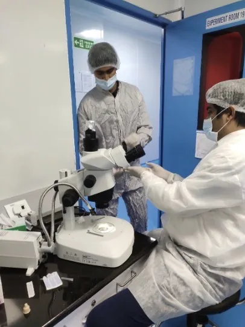
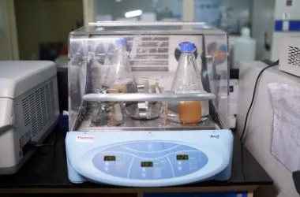
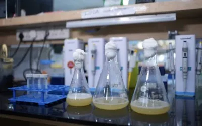
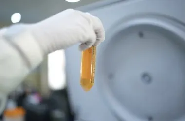
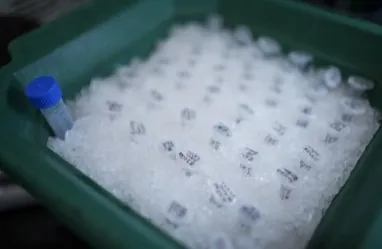
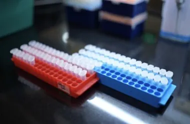
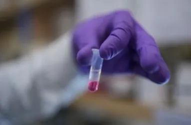
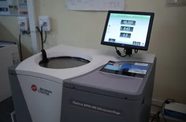
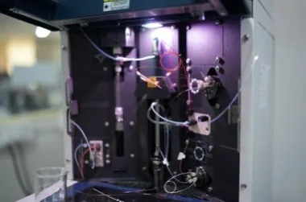
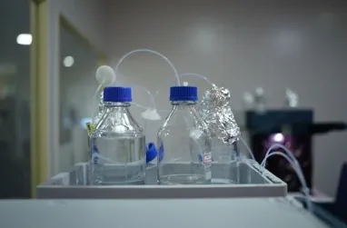
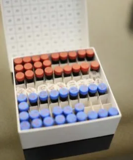
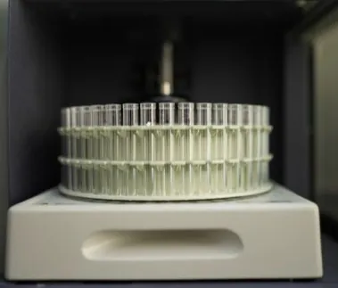
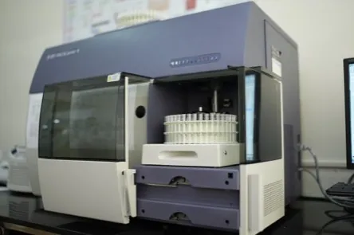
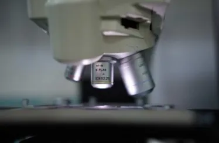
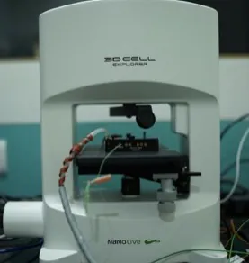
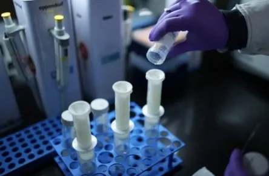
Patient-derived stem cells, grown into eye and nerve cells for disease modelling and drug testing
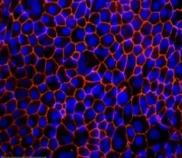
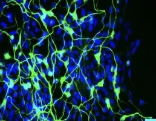
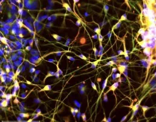
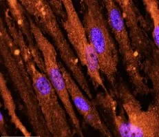
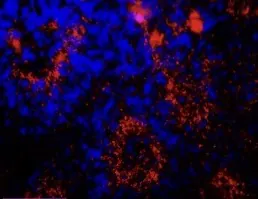
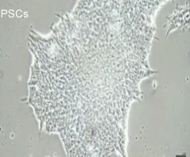
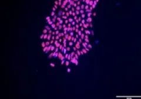
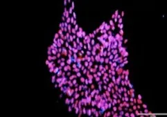
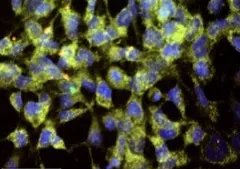
A World First · AI-Driven Biomarkers
The First Hospital in the World to Plan Your Care with AI-Driven Biomarkers
Narayana Netralaya nVision is the first hospital in the world to integrate AI-driven biomarkers into customised treatment planning, from dry eye to retinal diseases. BioPathfinder™ reads the biology of each patient's eye and turns it into a plan built for that patient alone.
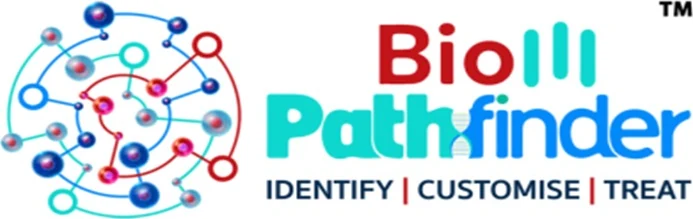
- Identify
- Customise
- Treat
01 Your biology
- TearsTear-film biomarkers
- BloodSystemic markers
- TissueCellular profile
- ImagingOCT & topography
- GenesGenetic risk
- HistoryClinical record
02 AI analysis
BioPathfinder™ finds the pattern behind your disease
03 Your plan
- Root cause foundBiomarkers pinpoint what drives your disease
- Targeted therapyTreatment matched to your biology
- Tracked responsePlan refined as your markers change
Identify
Biomarkers from tears, blood and tissue are read alongside advanced imaging. AI finds the biology that is driving your disease.
Customise
AI brings your biomarker profile, scans and clinical history together to build a treatment plan designed for your eye alone.
Treat
Targeted therapy, with progress tracked by how your biomarkers respond, and the plan refined as you heal.
From the front of the eye to the back
- Dry eye
- Ocular surface
- Cornea
- Retinal diseases
A Centre. A Culture. · Exploring the Unexplained
Pillar 09: X-PLAIN: Studying the Unknown in Medicine
We begin where answers are incomplete.
X-PLAIN is our centre for conditions where medicine has had little to offer. By connecting clinical observations with imaging, biology and the patient's lived experience, we turn unexplained findings into questions we can study, and into more precise care.
Who we see
- Genetic blindness
- Unexplained eye pain
- Stubborn dry eye
- Corneal haze & scarring
- Not responding to treatment
- Unexplained finding
- Studied question
- Precise care
- 01
Lab to clinic
Lab-to-clinic investigation of unexplained symptoms.
- 02
Genes & molecules
Genetic and molecular work-up for inherited eye disease.
- 03
The human weight
Recognition of the psychological weight of unanswered questions.
- 04
A way forward
A way forward for patients who have run out of options.
X-PLAIN in the Vision Synapse“When there is no answer yet, we go and find one.”
From your clinic visit to our lab, and back to you with answers.
Book a consultation with our specialists, or explore the Vision Synapse clinics.